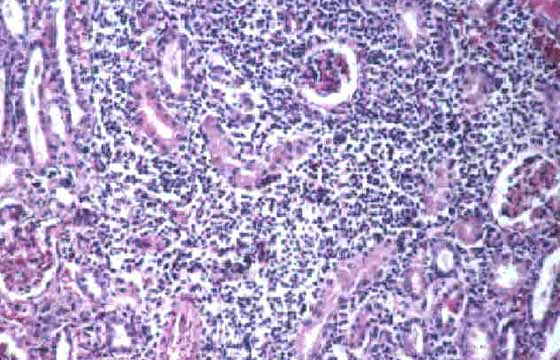
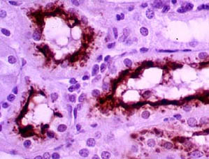

Leptospira canicola
About
Leptospires are transmitted to cattle via maintenance hosts. Maintenance hosts are a constant source of infection and typically do not show clinical signs. As silent-carrier animals, they maintain the bacteria and transmit leptospires to other animals. Transmission is efficient, with incidence of infection relatively high. Maintenance hosts can be carriers for months, years or even a lifetime.
In the case of L. canicola, the sole maintenance host is the dog. As such, only dogs transmit the bacteria, infecting each other and other animals (cattle and pigs).
Cattle are incidental hosts and do not carry the bacteria and are only infected for a short period. Once incidental hosts are removed from exposure to a maintenance host (infected dogs), the disease is not perpetuated.
Leptospirosis is one of the most important and costly contributors to reproductive loss in the beef and dairy industries.
Species Affected
Cattles and pigs
Additional Information
Leptospira Canicola in H&E Solution
Bacteria in Animals
Diseases brought about by bacteria’s
in the animals body have been rampantly spreading.
Leptospira Canicola
Bacteria in Animals
Diseases brought about by bacteria’s
in the animals body have been rampantly spreading.
Back